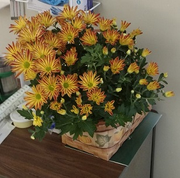
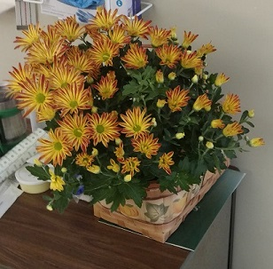

|
 |
Wednesday 9/28
We will go home Thursday afternoon. We will use home health daily.
Had our hair washed at Kutz Unlimited, had lunch at D's Dinner in Statesboro, and she saw her surgeon.
He was pleased with her progress. He thinks she will need daily home health to pack the wound. PT will probably
be done at Optim under the surgeon's watchful eye. The really good news is Wednesday's
1:00 appointment when they tell us about going home.
|
 |
Saturday 9/24
Nice day. Emily was there for the lunch that was brought by Verna and Jane. Really nice to see
Stella and Elaine. Hoping to go home this week.
Next to last week
We think we will be home in a week. She had her hair washed and cut Thursday at 4:00 from Kutz
Unlimited in Metter. They were the same ones that drove to St. Joseph's to do it. She no longer needs
help at meal time so I missed all 3 meals,
but did drive her to the hair dresser. Andrea
brought her lunch and they had a great fruit salad. She has become stronger every day, but still has a dizzy spell each day. Her siblings indicate that
might be normal. Looking forward to seeing Emily on Saturday the 24th.
Sunday 9/18
The LPN's took good care of us today. We did 2 long walks, finding the chapel and the lobby.
They also let her practice on the PT equipment, lifting her arms high and pedaling the bike. The chaplin introduced himself and showed me
how to get a free cup of coffee. Alison had one dizzy spell beore I arrived.
Tomorrow starts the real PT and OT.
Saturday 9/17
Change is difficult. We had a list of 7 or 8 huge problems. When Dr Slaughter arrived,
we addressed all of them. I think we are all well. My favorite orchestra piece in 1957 was "Slaughter on 10th Avenue", I had
to ask if he lived on 10 Ave. He works in Savannah and in Metter and assured me that he lived somewhere else.
Andrea brought lunch, fruit salad. In addition to the 3 of us, we also fed 2 of the nurses. Tomorrow's lunch for Alison will also be
Fruit salad. They allowed her to walk today.
Friday 9/16
Dizzy spells returned, but we still checked out. Hmmmmmmmmm. She had ordered chicken
wings for lunch and was not happy about leaving at 11:30. We stopped at Little Ceasar's
in Statesboro where
she ordered some pull apart cheese bread. We ate at home while she decided what to pack for Metter.
Metter could not have been sweeter as we moved into 157. The big problem was finding the correct bedside potty.
Actually there were many problems, but the staff addressed them all head on. When I left after the CBS news,
She seemed very relaxed and very tired from a very rough day. Over all, today was very productive and I now am 20
miles from her instead of 63.